Patch 3704
Welcome to the patchnotes for the 3704 patch.
The aim of the patch is to allow more unit and upgrade options while also improving the factional balance. A brief explanation of each change is found below.
We wish you good luck and much fun playing with the new patch!
-- The Balance Team
Land
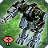 Mongoose
The Mongoose gets a long overdue buff in damage and accuracy.
- MaxSpeed:
3.6→ 3.5 - MuzzleVelocity:
25→ 30 - Muzzle Charge Time:
3→ 2 - Gatling Gun Firing Randomness:
0.4→ 0.1 - Gatling Gun Damage:
15→ 16
 Asylum
Asylum
Mobile shields are getting a masscost increase in return for an energy maintenance cost decrease. This should allow shields be used more often and with more ease in the T2 stage. Shield overspill is also increased.
- Mass cost:
144→ 220 - Energy maintenance:
75→ 30 - Overspill modifier:
0.15→ 0.3
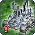 Parashield
- Mass cost:
120→ 220 - Energy maintenance:
110→ 60 - Overspill modifier:
0.15→ 0.3
 Athanah
Athanah
- Mass cost:
540→ 720 - Energy cost:
4800→ 6400 - Buildtime:
3200→ 3600 - Shield Recharge Time:
45→ 40 - Energy maintenance:
300→ 175 - Overspill modifier:
0.15→ 0.3
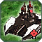 Deceiver
- Mass cost:
80→ 160 - Energy cost:
800→ 1600 - Buildtime:
400→ 800 - Energy maintenance:
75→ 40
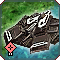 Wagner
Amphibious tanks are getting their torpedo damage increased so that the weapon can have some relevance.
- Torpedo Damage:
6→ 15
 Brick
Brick
- Torpedo Damage:
4→ 8
 Othuum
Othuum
- Torpedo Damage:
10→ 30
 Harbinger
Harbinger
The Harbinger can once again shoot while reclaiming.
 T1 Mobile Anti-Air
T1 Mobile Anti-Air
Mobile anti-air gets a mass cost increase to prevent it vetting from one bomber kill and Seraphim and UEF also get an HP reduction
All Factions:- Mass cost:
50→ 55
- Health:
360→ 310
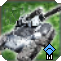 T3 Mobile Anti-Air
T3 Mobile Anti-Air gets speed and range increases. UEF also gets a damage radius buff to improve its hitting chances.
Aeon:- Speed:
2.8→ 3.5 - Range:
54→ 64
- Speed:
2.9→ 3.6 - Range:
52→ 62
- Speed:
2.6→ 3.3 - Range:
50→ 60 - Damage Radius:
1→ 1.5
- Speed:
2.7→ 3.4 - Range:
48→ 58
 T2/T3 Engineer
T2/T3 Engineer
Higher tech engineers get back their old speed so they are a bit more pleasant to use.
T2 Engineer- Speed:
1.7→ 1.9
- Speed:
1.5→ 1.9
 Scathis
Scathis
The Scathis is a gameender once again. It shoots a volley of 20 shells with a huge AoE every 20 seconds.
- Mass cost:
110000→ 220000 - Energy cost:
2000000→ 4000000 - Buildtime:
80000→ 240000 - Health:
17500→ 9000 - Damage:
3000→ 1600 - Damage Radius:
7→ 12 - Fire Rate:
0.53→ 0.05 - Muzzle Salvo Size:
1→ 20 - Maximum Firing Range:
300→ 2000 - Minimum Firing Range:
50→ 150
 Selen
Selen
- The Selen gets some fixes to its stealth/cloak toggle.
Air
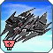 Renegade
The Cybran T2 gunship can now move and shoot at the same time like other gunships. It gets a cost increase to compensate for its increased capabilities
- Mass cost:
240→ 270 - Energy cost:
4800→ 5400 - Buildtime:
1600→ 1800
 Notha
Notha
The Notha can now kill UEF T2 economy buildings with 2 bombs. It now also shows the bomb radius on the reticle when using groundfire.
- Bomb Damage:
1175→ 1250
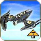 Torpedo Bombers
Torps Bombers get a mass cost and energy cost nerf. In addition, they become more microable to reward the smart use of these units. The BreakOffDistance is altered to prevent a dps increase which would result from the turn speed increase. Sonar Radius is reduced to weaken torp bombers versus submarines
- Mass cost:
240→ 270 - Energy cost:
4800→ 8000 - BreakOffDistance:
34→ 45 - TurnSpeed:
0.48→ 1 - Sonar Radius:
90→ 45
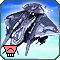 Restorer
The Restorer's speed and air-to-ground damage are increased.
- Speed:
8→ 10 - Damage:
24→ 28
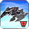 Wailer and Broadsword
Cybran and UEF T3 gunships will no longer chase air units which fly past.
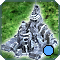 Novax
This is a rework of the Novax, giving it more intel abilities, and increasing it's price as a counterbalance of the laser targetting fix it got from 3699 gamepatch. A random falling animation is also introduced, so it is impossible to detonate a nuke at low altitude and kill the nuke owner base by a ctrl-k of the satellite
- Mass cost:
28000→ 36000 - Energy cost:
400000→ 512000 - Buildtime:
30000→ 44800 - Damage:
50→ 60 - Radar radius:
150→ 200 - Omni radius:
50→ 60 - Vision radius:
40→ 60
Navy
 Bulwark
Bulwark
The Bulwark is getting a nerf to its mobility and is being made larger so that it is harder to dodge shots once the shield bubble has been dropped. It also gets a shield stacking nerf via the damage overspill modifier
- Speed:
7→ 5 - Turn Rate:
60→ 45 - Overspill Damage Modifier:
0.25→ 0.35 - UniformScale:
0.09→ 0.135
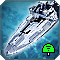 Beacon
The torpedo defense of the aeon frigate works more effectively
 Siren
Siren
The cybran cruiser now shoots its anti-air missiles in a faster and more effective way.
 Exodus
Exodus
The Aeon destroyer gets a minor increase to the area of effect on its cannon and its torp defence works more effectively.
- AoE:
1→ 1.4
 Battleships:
Battleships:
Cybran Battleships are getting an HP nerf and Summits get a cost decrease. The range has been fixed on the Omen.
Galaxy:- Health:
47000→ 44500
- Mass cost:
10500→ 10000 - Buildtime:
33000→ 31600
- Range:
104/114→ 110
 Tempest
Tempest
The Tempest has a reduced mass cost and its shooting has been improved.
- Mass cost:
24000→ 22000
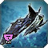 Yathsou
The T3 Seraphim submarine hunters get a water vision increase to improve their performance against cybran T2 submarines.
- WaterVisionRadius:
45→ 55
Structures
 Tactical Missile Defense
Tactical Missile Defense
TMD is no longer as slow to build
- Buildtime:
600→ 400
 T2 Land HQ
T2 Land HQ
T2 Land HQ gets a buildtime decrease to make T2 rushes on small maps more viable.
- Buildtime:
2600→ 2300
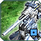 T2 Artillery
Minimum range is increased for T2 Artillery so it is more vulnerable at close range and must be defended by point defence or units. Its Buildtime is also increased.
- Buildtime:
1200→ 1600 - Minimum Range:
5→ 50
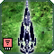 Eye of Rhianne
Energy storage is added to the Eye so additional energy storages are not required to use it.
- Energy Storage:
0→ 10000
 T2 Static Flak
T2 Static Flak
Static Flak gets a buildtime buff to be more in line with other static AA buildtimes.
- Mass cost:
392→ 400 - Energy cost:
3920→ 4000 - Buildtime:
958→ 540
 T2 Radar
T2 Radar
Maintenance is reduced for T2 radar.
- Energy Maintenance:
200→ 150
 Airstaging
Airstaging
The mass cost for repairing in air staging platforms is removed to prevent units from becoming trapped in the platforms while stalling mass. The energy cost of repairing is increased. It is also buildable by T1 engineers to allow for easier refueling of planes far from the main base.
- Tech level:
2→ 1 - Repair Mass cost:
0.5→ 0 - Repair Energy cost:
5→ 30 - Buildtime:
534→ 450
 Nuke Launchers
Nuke Launchers
Assisting Nuke Launchers has been nerfed by increasing the buildtime of the missile and proportionally increasing the buildpower of the launcher. It also get a nerf of build time for consistency with experimentals' built time nerf of last balance patch.
- BuildPower:
1080→ 1500 - Missile Buildtime:
324000→ 450000 - Build Time:
10453→ 25000
 T2 static shields
T2 static shields
T2 shields are getting a nerf to their buildtime and their recharge time. Cybran have buildpower buff to compensate, so they can upgrade on their own as fast as before.
Aeon- Recharge Time:
16→ 24 - Buildtime:
701→ 950
- Recharge Time:
15→ 23 - Buildtime:
845→ 1150
- Recharge Time:
17→ 25 - Buildtime:
958→ 1250
- Recharge Time:
18→ 20 - Buildtime:
600→ 700 - Buildpower:
15.53→ 19.2
- Recharge Time:
16→ 22 - Buildtime:
466→ 775 - Buildpower:
13.34→ 21
- Recharge Time:
18→ 25 - Buildtime:
1067→ 2200 - Buildpower:
30.575→ 29.3
- Recharge Time:
20→ 25 - Buildtime:
3667→ 3515 - Buildpower:
11.81→ 50.7
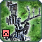 HSD Pulse
The T3 UEF shield can now withstand a single mavor shell without dropping. It also gets a slight cost increase.
- Shield Health:
15000→ 17000 - Mass cost:
3000→ 3300 - Energy cost:
50000→ 55000
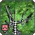 ED5
The Cybran ED5 shield can now withstand a single mavor shell without dropping. This shield was already overpriced so its cost is not increased. It also get a huge buildtime nerf to correct a bug causing extreme cost in assisting ED5.
- Shield Health:
15000→ 16500 - Buildtime:
1654→ 7100
 T3 Static Artillery
T3 Static Artillery
The build time of T3 Arty have been increased to keep up with BT nerf of experimentals that happened last balance patch
- Emissary (Aeon):
30764→ 120000 - Hovatham (Seraphim):
29792→ 110000 - Duke (UEF):
30278→ 115000 - Disruptor (Cybran):
29308→ 105000
 Game Enders
Game Enders
Increase of the build time on Game Ender. A lower increase is applied on the salvation, so the paragon is not nerfed too much, and this act as an indirect buff to the salvation.
- Mavor:
99900→ 300000 - Paragon:
125100→ 325000 - Salvation:
90000→ 100000 - Yolona Oss:
125100→ 250000
ACUs
 Regen Aura
Regen Aura
Restoration Field has a larger range and grants additional max hp. Thaams in the field's range will be bumped to 308 hp, requiring an extra shot from enemy ACUs to be killed. An fx will help spot the units benefiting from this upgrade.
- Mass cost:
600→ 700 - Energy cost:
4500→ 18000 - BuildTime:
600→ 700 - Added ACU HP:
1000→ 500 - Range:
22→ 30 - Max Health Multiplier:
1→ 1.1 - Min Regen:
0→ 3
 Advanced Regen Aura
Advanced Regen Aura
Advanced Restoration Field grants a minimum regen of 15/s, has a greater range and grants more health.
- Mass cost:
1500→ 1800 - Energy cost:
31250→ 42000 - BuildTime:
1250→ 1500 - Added ACU HP:
2500→ 1500 - Range:
30→ 35 - Max Health Multiplier:
1.1→ 1.2 - Min Regen:
0→ 15
Aeon Personal Shield
The first Aeon ACU shield is buffed with a lower recharge time.
- Shield Recharge time:
90→ 75
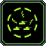Chrono Dampener
Chrono Dampener's stun was so long that units would lose their move orders, so it is reduced. 3000 health is added to the upgrade.
- Additional Health:
0→ 3000 - Stun Time:
3.5s→ 2.5s
Projectiles
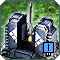 Tactical missile
- Mass cost:
180→ 250
- Mass cost:
180→ 250 - Buildtime:
300→ 450